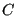
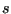
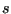
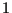
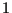
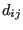
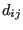
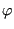
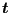

Crack propagation
In CalculiX a rather simple model to calculate cyclic crack propagation is
implemented. In order to perform a crack propagation calculation the following
procedure is to be followed:
- A static calculation (usually called a Low Cycle Fatigue = LCF calculation) for the uncracked structure (using volumetric elements) for one or more steps must have been performed
and the results (at least stresses; if applicable, also the temperatures)
must have been stored in a frd-file.
- Optionally a frequency calculation (usually called a High Cycle
Fatigue = HCF calculation) for the uncracked structure has been
performed and the results (usually stresses) have been stored in a frd-file.
- For the crack propagation itself a model consisting of at
least all cracks to be considered meshed using S3-shell
elements must be created. The orientation of all shell elements used to
model one and the same crack should consistent, i.e. when viewing the crack
from one side of the crack shape all nodes should be numbered clockwise or all nodes
should be numbered counterclockwise. Preferably, also the mesh of the uncracked
structure should be contained (the crack propagation can be easier
interpreted if the structure in which the crack propagates is also
visualized) .
- The material parameters for the crack propagation law implemented in
CalculiX must have been determined. Alternatively, the user may code
his/her own crack propagation law in routine crackrate.f.
- The procedure *CRACK PROPAGATION must have
been selected with appropriate parameters. Within the *CRACK PROPAGATION
step the optional keyword card *HCF may have been selected.
In CalculiX, the following crack propagation law has been implemented:
where
|
![$\displaystyle = 1-\exp \left[ \epsilon (1 - \frac{\Delta K}{\Delta K_{th}} ) \right], \;\;\; \Delta K > \Delta K_{th}$](img1855.png) |
|
|
|
(579) |
accounts for the threshold range,
for the critical cut-off and
for the
influence. The material constants have to be entered by using
a *USER MATERIAL card with the following 8 constants
per temperature data point
(in that order):
,
,
,
,
![$ \Delta K_{th} [F/L^{3/2}]$](img1866.png) ,
,
and
,
,
and  [-], were is the unit of force and of
length. Notice
that the first part of the law corresponds to the Paris law. Indeed the classical Paris constant C can be obtained
from:
[-], were is the unit of force and of
length. Notice
that the first part of the law corresponds to the Paris law. Indeed the classical Paris constant C can be obtained
from:
Vice versa,
can be obtained from  using the above
equation once
has been chosen. Notice that
is the rate for which
(just considering the Paris
range). For a user material, a maximum of 8 constants can be defined per line
(cf. *USER MATERIAL). Therefore, after entering the 8
crack propagation constants, the corresponding temperature has to be entered
on a new line.
The crack propagation calculation consists of a number of increments during
which the crack propagates a certain amount. For each increment in a LCF
calculation the following
steps are performed:
- The actual shape of the cracks is analyzed, the crack fronts are
determined and the stresses and temperatures (if applicable, else zero)
at the crack front nodes are interpolated from the stress and temperature
field in the uncracked structure.
- The stress tensor at the front nodes is projected on the local
tangent plane yielding a normal component (local y-direction), a shear component orthogonal
to the crack front (local x-direction) and one parallel to the crack
front (local z-direction), leading to the
K-factors
 ,
,  and using the formulas:
and using the formulas:
where , and are shape factors taking the form
for subsurface cracks,
for surface cracks spanning an angle and
for surface cracks spanning an angle of 0 (i.e. a one-sided crack in a
two-dimensional plate). For an angle in between 0 and  the shape
factors are linearly interpolated in between the latter two formulas. In
the above formulas  is a local coordinate along the crack front,
taking the values
the shape
factors are linearly interpolated in between the latter two formulas. In
the above formulas  is a local coordinate along the crack front,
taking the values  and  at the free surface and 0 in the middle
of the front. If the user prefers to use more detailed shape factors,
user routine crackshape.f can be recoded.
and  at the free surface and 0 in the middle
of the front. If the user prefers to use more detailed shape factors,
user routine crackshape.f can be recoded.
- The crack length
 in the above formulas is determined in two
different ways, depending on the value of the parameter LENGTH on the
*CRACK PROPAGATION card:
in the above formulas is determined in two
different ways, depending on the value of the parameter LENGTH on the
*CRACK PROPAGATION card:
- for LENGTH=CUMULATIVE the crack length is obtained by
incrementally adding the crack propagation increments to the
initial crack length. The initial length is determined using the
LENGTH=INTERSECTION method.
- for LENGTH=INTERSECTION a plane locally orthogonal to the
crack front is constructed and subsequently a second intersection
of this plane with the crack front is sought. The distance in
between these intersection points is the crack length (except for
a subsurface crack for which this length is divided by two). Notice
that for intersection purposes the crack front for a surface
crack is artificially closed by the
intersection curve of the crack shape with the free surface in
between the intersection points of the crack front.
Subsequently, the crack length is smoothed along the crack front
according to:
where the sum is over the  closest nodes,  is the Euclidean
incremental distance between node
closest nodes,  is the Euclidean
incremental distance between node  and
and  , and
, and  is the distance
between node and the
farthest of these nodes. is a fixed fraction of the total number of
nodes along the front, e.g. 90 %.
is the distance
between node and the
farthest of these nodes. is a fixed fraction of the total number of
nodes along the front, e.g. 90 %.
- From the stress factors an equivalent K-factor and deflection angle
 is calculated using a light modification of the formulas by
Richard [71] in order to cope with negative values as well:
and
for  and else. Subsequenty, and
are smoothed in the same way as the crack length. Finally,
if any of the deflection angles exceeds the maximum defined by the user
(second entry underneath the *CRACK
PROPAGATION card) all values along the front are
scaled appropriately.
and else. Subsequenty, and
are smoothed in the same way as the crack length. Finally,
if any of the deflection angles exceeds the maximum defined by the user
(second entry underneath the *CRACK
PROPAGATION card) all values along the front are
scaled appropriately.
Notice that at each crack front location as many and
values are calculated as there are steps in the static
calculation of the uncracked structure.
- The crack propagation increment for this increment is
determined. It is the minimum of:
- The user defined value (first entry underneath the *CRACK
PROPAGATION card)
- one fifth of the minimum crack front curvature
- one fifth of the smallest crack length
- The crack propagation rate at every crack front location is
determined. If there is only one step it results from the direct
application of the crack propagation law with
. For
several steps the maximum minus the minimum of is taken. Notice that the crack
rate routine is documented as a user subroutine: for missions
consisting of several steps the user can define his/her own procedure
for more complex procedures such as cycle extraction. The maximum value
of across all crack front locations determines the number of
cycles in this increment.
- For each crack front node the location of the propagated node is
determined. This node lies in a plane locally orthogonal to the
tangent vector along the front. To this end a local coordinate system
is created (the same as for the calculation of , and
) consisting of:
- The local tangent vector
.
- The local normal vector obtained by the mean of the normal
vectors on the shell elements to which the nodal front position
belongs. This vector is subsequently projected into the plane
normal to
and normalized to obtain a vector
 .
.
- a vector in the propagation direction
. This assumes that the
tangent vector was such that the corkscrew rule points into
direction
when running along the crack front in
direction
.
- Then, new nodes are created in between the propagated nodes such
that they are equidistant. The target distance in between these nodes
is the mean distance in between the nodes along the initial crack front.
- Finally, new shell elements are generated covering the crack
propagation increment and the results (K-values, crack length etc.)
are stored in frd-format for visualization. Then, a new increment can
start. The number of increments is governed by the INC parameter on the
*STEP card.
For a combined LCF-HCF calculation, triggered by the *HCF keyword in the
*CRACK PROPAGATION procedure the picture is slightly more complicated. On the
*HCF card the user defines a scaling factor and a step from the static
calculation on which the HCF loading is to be applied. This is usually the
static loading at which the modal excitation occurs. At this step a HCF cycle
is considered consisting of the LCF+HCF and the LCF-HCF loading. The effect is as follows:
- If this cycle leads to propagaton and HCF propagation is not allowed
(MAX CYCLE= 0 on the *HCF card; this is default) the program stops with
an appropriate error message.
- If it leads to propagation and HCF propagation is allowed (MAX
CYCLE
 0 on the *HCF card) the number of cycles is determined to
reach the desired crack propagation in this increment and
the next increment is started. No LCF propagation is considered in this
increment.
0 on the *HCF card) the number of cycles is determined to
reach the desired crack propagation in this increment and
the next increment is started. No LCF propagation is considered in this
increment.
- If it does not lead to HCF propagation, LCF propagation is
considered for the static loading in which the LCF loading of the
step to which HCF applies is repaced by LCF+HCF loading. The
propagation is calculated as usual.
Right now, the output of a *CRACK PROPAGATION step cannot be influenced by
the user. By default a data set is created in the frd-file consisting of the
following information (most of this information can be changed in user
subroutine crackrate.f):
- The dominant step. This is the step
with the largest (over all steps).
- DeltaKEQ: the value of
for the main cycle. In the
present implementation this corresponds to the largest value of (over all steps).
- KEQMIN: the minimal value of (over all steps).
- KEQMAX: the largest value of (over all steps).
- K1WORST: the largest value of multiplied by its sign (over all steps).
- K2WORST: the largest value of multiplied by its sign (over all steps).
- K3WORST: the largest value of multiplied by its sign (over all steps).
- PHI: the deflection angle .
- R: the R-value of the main cycle. In the present implementation
this is zero.
- DADN: the crack propagation rate.
- KTH: not used.
- INC: the increment number. This is the same for all nodes along one
and the same crack front.
- CYCLES: the number of cycles since the start of the calculation. This
number is common to all crack front nodes.
- CRLENGTH: crack length.
- DOM_SLIP: not used